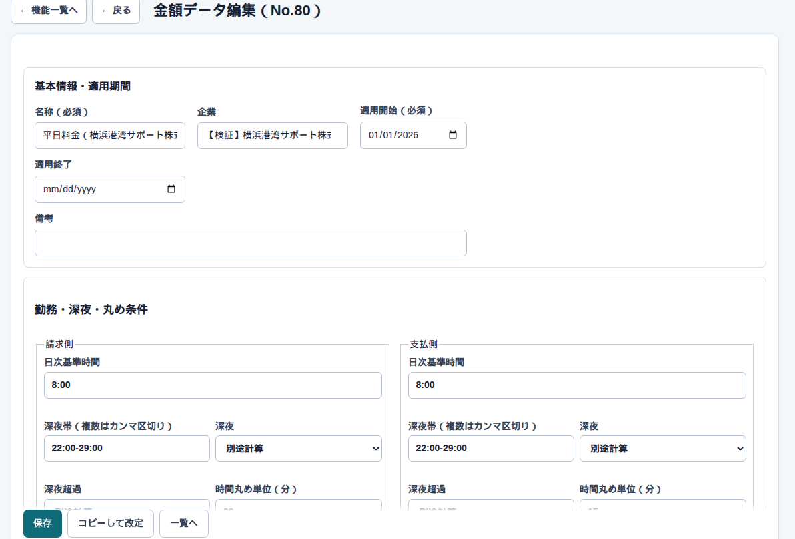

マスタ → 金額データ管理 → 編集
金額データの詳細
開くとこう見えます
料金の名前ごとに、請求と支払を別々に持ちます。同じ行に請求額・支払額・利益率が出ます。

何をどこに入れるか
| ここ | 何をするか |
|---|---|
| 適用開始日 | その日以降の日報がこのセットを候補にする |
| 料金名 | 通常・土曜・日祝・研修など。日報で選ぶ名前 |
| 請求 / 支払 | 整数円。画面の表示は全角円記号つき |
| 基準時間・深夜帯 | 請求側と支払側で別でもよい |
| 距離 | 日次・月間・段階。日報入力者が方式は選びません |
気をつけること
画面の金額は整数円です。入力・保存・計算も整数円です。単価に小数があるときだけ、表示の末尾ゼロを省略します。